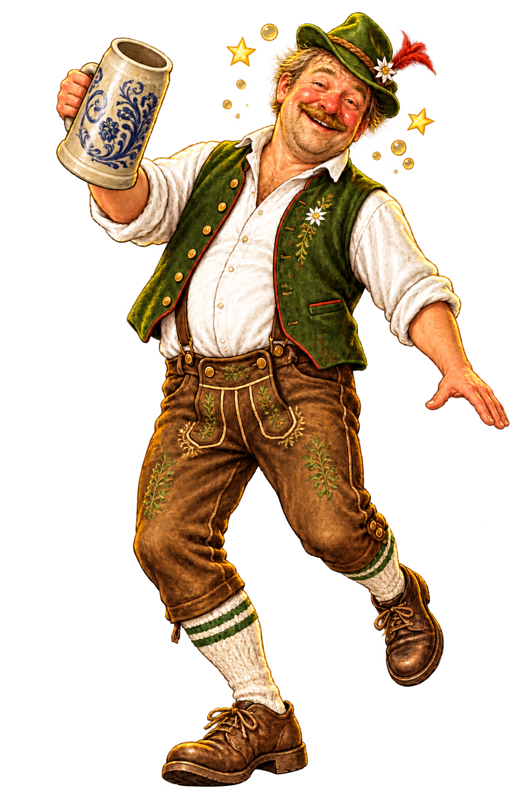

Bierbecher
Et lille ølglas.
Så du kan bestille med autoritet, nikke klogt til brygmesteren og misforstå resten med imponerende selvtillid.

Søg efter det, du står med i hånden—eller tryk på terningen og lad skæbnen vælge aftenens glosse.
29 gloser klar til brug
Et lille ølglas.
En stamgæst.
Ølbrik.
En bid brød til øl.
I Sydtyskland bruges begrebet om en Biergarten, hvor man sidder ved langborde under grønne træers skygge. En ølhave kan ligge der, hvor man tidligere havde gær- eller lagerkælder, for eksempel en Felsenkeller.
Ølkrus.
Ølsluger.
Urokkelig ro.
En ølstue med tappehaner.
Lille ølkrus.
Bryggerstuen—skænkestue.
Måltid til øl.
Stentøjskrus.
Se Zwickelbier.
Øl-tjenere i Köln og Düsseldorf.
Et glas eller krus, der rummer en hel liter øl.
Egentlig “Peters små mænd”. Navnet på store fadølsankre i Köln.
Lækkerbiskener.
En række boder med øl og mad.
Et halvfyldt glas eller krus.
Et glas eller krus, der rummer en halv liter øl.
Ølstue.
Stamkrus, som værtshuset deponerer til stamgæsterne.
Hemmelighed—et udtryk, der bruges i Düsseldorf. Ordet henviser til, at brygmesteren tilsætter mere malt end normalt, og at dette er en hemmelighed.
Skænkestue.
Bryghus eller bryggekedel.
Ufiltreret og upasteuriseret øl med svæv.
Ufiltreret og upasteuriseret øl. En Zwickel er en hane, som man stikker ind i lagerfadene for at smage, om øllet er modnet nok. Begrebet kendes også som Kellerbier.
En øl med fuld krop. Den skal indeholde 11–15 % Plato, hvilket typisk giver en alkoholprocent på 3–5 %.